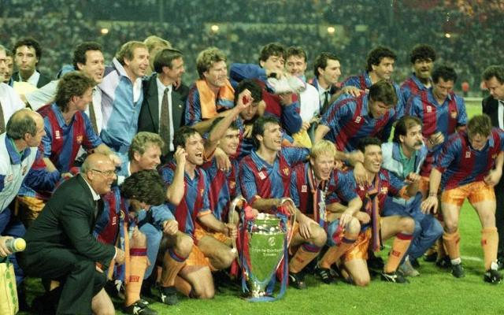

Club Geschiedenis

Barcelona Geschiedenis Site FC Barcelona werd op 29 november 1899 door de Zwitser Hans Joan Gamper opgericht. Via een advertentie in lokale dagbladen wierf Gamper de eerste leden. De Engelsman Walter Wild werd de eerste voorzitter van de club. De eerste wedstrijd vond plaats op 8 december 1899: er werd met 1-0 verloren van een elftal van Engelse immigranten.
Begin jaren twintig van de twintigste eeuw beleefde Barça de eerste succesvolle periode met diverse prijzen. Josep Samitier, Paulino Alcántara, Sagi-Barbá en Vicenç Piera waren in die tijd de grote sterren, aangevuld met doelmannen Ricardo Zamora en later Franz Platko. In 1922 werd het stadion Camp de Les Corts in gebruik genomen. In deze succesperiode won FC Barcelona vier keer de Copa de España (1920, 1925, 1926, 1928), negen keer de Campionat de Catalunya (1919-1922, 1924-1928) en als slotstuk de eerste landstitel in 1928/1929. De grote rivaal in deze periode was vooral stadsgenoot RCD Espanyol met de Derbi de Barcelona als een van de belangrijkste wedstrijden van het seizoen.

Pas in de jaren vijftig en begin jaren zestig kende Barcelona weer grote successen. De komst van Ladislao Kubala, een vluchteling uit Hongarije, leidde deze nieuwe glorieperiode in. Aanvankelijk belette de Hongaarse regering Kubala te spelen, maar de Spaanse dictator Francisco Franco, zelf een voetbalfan en ook politiek ijverig om Spanje uit zijn internationale isolement te halen, kwam persoonlijk tussenbeide bij de internationale voetbalautoriteiten. In de sfeer van de Koude Oorlog woog het anti-communisme van een dergelijke houding zwaarder door dan de vroegere banden tussen Franco en Hitler; Kubala mocht spelen.
In 1952 won FC Barcelona vijf bekers: de Spaanse landstitel, de Spaanse beker, de Copa Latina, de Copa Eva Duarte en de Copa Martini Rossi. Deze prestatie leverde dit succesteam onder leiding van trainer Fernando Daucik de bijnaam Barça Cinc Copes (Barça van de Vijf Bekers) op. FC Barcelona leek in 1952 nog sterker te worden met het contracteren van Alfredo Di Stéfano. De komst van de Argentijnse aanvaller liep door inmenging van dubieuze tussenpersonen en de politiek echter mis en in plaats van FC Barcelona was het Real Madrid die Di Stéfano uiteindelijk contracteerde. Ook zonder Di Stéfano domineerde FC Barcelona samen met Real Madrid in Spanje met een elftal bestaand uit onder meer Kubala, Luis Suárez, Antoni Ramallets, Joan Segarra en Evaristo. Onder de Argentijnse trainer Helenio Herrera werd tweemaal de Europacup III gewonnen. In 1957 werd het nieuwe stadion Camp Nou geopend en werd de club kampioen van het Mundialito de Clubes. FC Barcelona was in 1960 de eerste club die Real Madrid in de Europacup I, na vijf titels op rij, wist uit te schakelen. De finale werd dat seizoen gehaald, maar daarin verloor Barcelona met 3-2 van Benfica. Het betekende het einde van deze succesperiode. In de jaren zestig won FC Barcelona nog wel de Copa del Generalísimo (1963 en 1968) en de Europacup III (1966).